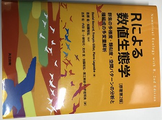

お知らせ
2023.2.27
私が翻訳に関わった本「Rによる数値生態学」が出版されました。群集生態学でよく使われる序列化や多様度などを計算するRコードが載っている実用的な本になっています。
・詳細はこちら

2019.2.21
生態学会神戸大会で行われるシンポジウム「ネットワークが切り拓く生態学の最前線」において研究発表を行います（3月19日9:30-12:30 Room B）。発表タイトルは「送粉ネットワークのジェネラリスト化による送粉機能への影響ー都市と島の生態系を例に」です。是非お越しください！
・要旨はこちら
2019.2.21
末次健司さんらとの共同研究「Thrips as a supplementary pollinator in an orchid with granular pollinia: is this mutualism?」
がEcologyのThe Scientific Naturalistに掲載されました。ハナアブが主要な送粉者であるカキランにおいてアザミウマが補助的な送粉者として機能しているのか調べた研究です。
・本文はこちら
2018.04.01
新年度になりました！今年度もよろしくお願いいたします！
今年度は源研究室（環境DNAなどを研究）にも所属することになりました。
源研究室の皆さまよろしくお願いいたします！
2018.03.18
共同研究をしている角屋真澄さん(富山大)が第65回生態学会で
ポスター賞優秀賞を受賞しました。おめでとうございます！
＜動物と植物の相互関係部門＞
*角屋真澄，辻本翔平，久保田将裕，渡邉裕人，伏黒陽大，平岩将良，丑丸敦史，工藤岳，石井博
「虫媒花における、花色と形態の相関進化ー送粉者相の異なる地域間の比較ー」
2017.07.26
吉川徹朗さん、岸茂樹さん、櫻なささん、加藤和弘さんとの共同研究「Interaction between insects and insect-pollinated plants on Miyake Island
after a recent volcanic eruption: A comparison between vegetation types」
がJournal of Asia-Pacific Entomologyに掲載されました。大きな噴火があった三宅島において、植物-送粉者ネットワークを植生間で比較した研究です。
・本文はこちら
2017.03.15
共同研究をしている清水健将さんが第64回生態学会で
ポスター賞優秀賞を受賞しました。おめでとうございます！
＜動物と植物の相互関係部門＞
*清水健将, 平岩将良, 丑丸敦史(神戸大・人間発達環境)
「都市化による機能群多様性の減少が植物‐送粉者ネットワークに与える影響」
2017.01.13
丑丸敦史さん
との共同研究「Low functional diversity promotes niche changes in natural island pollinator communities.」
がProceedings of the Royal Society Bに掲載されました。近年進行するマルハナバチなどの長口吻送粉者の減少が
植物に与える影響評価を伊豆諸島の群集を用いて行った研究です。
・本文はこちら
・日本語の要約はこちら
2016.12.26
ウェブサイトを開設しました。よろしくお願いします。